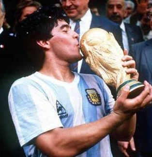
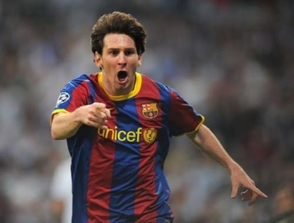

Argentina National Football Team Selección Argentina de Fútbol 阿根廷国家足球队
阿根廷国家男子足球队（Argentina national football team）的管理机构是阿根廷足球协会，该队是世界上最成功的国家队之一，曾21次夺取过国家队重大赛事的冠军，包括三次称雄世界杯（1978、1986、2022年）、15次夺得美洲杯、两次获得奥运男足金牌（2004、2008年）以及一次联合会杯
阿根廷的首场比赛是在1901年5月16日，对阵乌拉圭国家队（在蒙得维的亚举行，最终阿根廷以3-2完成了处子秀）。由于当时还没有国际比赛，阿根廷也只能进行一些友谊比赛，当然对手也仅限于南美球队。由于距离和第一次世界大战的阻碍，那个年代的阿根廷并没有能和欧洲球队一较高下。直到1928年阿根廷参加荷兰举行的奥运会，这才让阿根廷第一次和欧洲球队正面较量。首场比赛阿根廷0-0战平葡萄牙，最终阿根廷获得了银牌，决赛上输给了乌拉圭。1921、1925、1927、1929阿根廷连续获得了4届美洲杯冠军，这也是他们的前四座美洲杯，1930年首届世界杯，阿根廷也取得了巨大成功，他们成功地闯入了决赛，有意思的是决赛上还是乌拉圭，最终阿根廷2-4输掉了比赛，当时总共有9.3万名球迷观看了比赛。
阿根廷首次在世界杯上取得好成绩是1930年，在历史上的首届世界杯上，他们打进了最后决赛，以2比4负于东道主乌拉圭获得亚军。
1974年，阿根廷足协主席David Bracuto任命梅诺蒂为阿根廷国家队主教练，1975年梅诺蒂带领阿根廷U21队获得了土伦杯冠军，决赛上阿根廷1-0击败法国队。三年后，阿根廷主办了1978年世界杯，不过此时梅诺蒂和阿根廷足协产生了摩擦，争论的主题是是否让马拉多纳离开国家队。阿根廷国家队在前锋马里奥·肯佩斯的带领下获得了1978年世界杯冠军，这也是阿根廷第一座世界杯冠军，决赛上马里奥·肯佩斯为阿根廷攻入了2粒进球，帮助主队击败荷兰队夺冠。
1986年墨西哥世界杯资格赛，阿根廷最后一场对阵秘鲁，最终阿根廷成功进入决赛圈。世界杯上的第一场比赛，阿根廷3-1击败南朝鲜。第二场1-1战平世界冠军意大利，最后一场2-0击败保加利亚。这样阿根廷2胜1平成功晋级。第二轮，阿根廷1-0击败乌拉圭。到了1/4决赛2-1战胜英格兰，2粒进球都来自马拉多纳。马拉多纳的第一个进球却成为了世界上最具争议的一粒进球。赛后马拉多纳也承认，第一粒进球是用“上帝之手”攻入的。从此，马拉多纳的那粒争议进球获得了一个专有名字“上帝之手”。不过马拉多纳的第二粒进球被评为了20世纪最精彩进球---马拉多纳带球从中场开始，连续晃过5名英格兰球员的防守，最后射门得分。
1987年，也就是1986世界杯后的第一年，阿根廷主办了美洲杯，不过令人失望的是，阿根廷在半决赛0-1被乌拉圭击败，而此后的三四名之争的比赛上，又1-2不敌哥伦比亚，最终东道主阿根廷只获得了第四名。1990年意大利世界杯，阿根廷出人意料地输掉了他们的首场比赛，0-1不敌喀麦隆。还好，第二场2-0击败了苏联。小组赛最后一场，阿根廷1-1战平罗马尼亚，勉强晋级第二轮。进入第二轮后，他们迎来了强大的巴西队，克劳迪奥·卡尼吉亚接过马拉多纳的妙传，轻松破门得分，帮助阿根廷以1-0取得最后的胜利。1/4决赛上，阿根廷击败了南斯拉夫，不过是靠点球大战取胜。半决赛，阿根廷的对手是东道主意大利，两队1-1战平，无奈两队进入点球大战，阿根廷守门员的精彩扑救帮助阿根廷挺进决赛。此时的阿根廷人沉浸在了狂喜之中，因为他很多可能会卫冕成功。决赛上，他们再一次和西德相遇，不过和上一次不同的是，西德队用一粒点球击碎了阿根廷人的卫冕梦。阿根廷遗憾地结束了本届世界杯。
1994年世界杯在美国举行，此时巴西莱担任阿根廷主教练，此时马拉多纳仍然担任队长。世界杯小组赛上，前两场比赛阿根廷表现的非常出色，分别以4-0和2-1击败希腊和尼日利亚。不过在和尼日利亚的比赛后，世界足联宣布马拉多纳没有能通过药检，并被禁止参加世界杯。阿根廷在失去了他们的头号球星后表现非常糟糕。第三场上被保加利亚击败，不过2胜1负足以晋级。淘汰赛上，又被罗马尼亚击败。无缘1/4决赛。
1998年世界杯在法国举行，此时帕萨雷拉担任阿根廷主教练。世界杯小组赛上，阿根廷表现的非常出色，分别以1-0、5-0和1-0击败日本、牙买加和克罗地亚。淘汰赛中的1/8决赛阿根廷和英格兰为球迷们奉献上了场经典比赛，阿根廷最终在点球大战中获胜。1/4决赛当中阿根廷在最后时刻被博格坎普绝杀，以1比2负于荷兰，无缘四强。
2002年世界杯，阿根廷和英格兰、瑞典、尼日利亚分在一组。小组赛上，阿根廷先以1-0击败尼日利亚，随后又以0-1负于英格兰队，1-1战平瑞典，以小组第三无缘16强。
2004年佩克尔曼成为阿根廷新一任教练，佩克曼曾经带队获得过3次世青赛冠军：1995年卡塔尔，1997年马来群岛和2001年阿根廷三届世青赛，他的表现是他成为了阿根廷教练的最好人选。同时佩克曼在2005年联合会杯上有着很好的表现，他带队闯入了决赛，可惜最后1-4被巴西击败。2006世界杯，阿根廷被分在了死亡之组，同组的还有科特迪瓦，塞黑，和荷兰。阿根廷赢下了第一场和科特迪瓦的比赛，此后又6-0大胜塞黑（梅西表现的相当出色），小组赛最后一场阿根廷0-0被荷兰逼平，最终阿根廷成功突围死亡之组。进入第二轮，阿根廷第一个对手是墨西哥，这是开始以来阿根廷遇到的最艰难的对手，90分钟的比赛两队1-1战平，进入加时赛，最后时刻罗德里格斯的神奇进球帮助阿根廷取得胜利。进入1/4决赛，阿根廷迎来了东道主德国队，在经历了加时赛后，仍然1-1战平，比赛进入点球大战，不过这次神奇表现来自德国队守门员莱曼，他的扑救把德国队送入半决赛。
第19届世界杯一场1/8决赛在约翰内斯堡的足球城球场展开争夺，阿根廷3比1击败墨西哥，梅西助攻越位位置的特维斯先拔头筹，伊瓜因扩大比分，特维斯再度破门锁定胜局，埃尔南德斯为墨西哥扳回一城挽回颜面。阿根廷将在1/4决赛对阵德国。可惜梅西、伊瓜因等人表现平平，0：4负于德国，无缘半决赛。
北京时间2014年6月16日，巴西世界杯F组首轮，阿根廷2-1小胜波黑，取得开门红。梅西破门并造乌龙[13]。6月22日，阿根廷队以1：0击败了伊朗队，提前一轮晋级2014年巴西世界杯1/8决赛。梅西在比赛伤停补时阶段打入制胜进球，马斯切拉诺第100次为国出战。凭借伤停补时阶段的进球，梅西被评为这场比赛最有价值球员。他打满90分钟，完成49次传球，6次射门。这也是梅西在本届世界杯上第二次被评为单场MVP。6月26日，F组末轮，阿根廷3比2力克尼日利亚，梅西梅开二度，罗霍打入制胜球。阿根廷3战全胜获得小组头名，尼日利亚获小组第二[14]。7月2日，1/8决赛，阿根廷加时赛1比0险胜瑞士，梅西第118分钟助攻迪马利亚绝杀[15]。7月6日，1/4决赛，开赛仅仅8分钟伊瓜因打破僵局，阿根廷1比0战胜比利时晋级世界杯4强[16]。7月10日，半决赛第2场比赛，阿根廷点球大战4比2淘汰荷兰。双方120分钟内互交白卷战平，罗梅罗在点球战中分别扑出弗拉尔和斯内德射出的点球。阿根廷24年后再进决赛[17]。7月14日决赛中0比1输于德国国家队，屈居亚军。
2015年智利美洲杯和2016年美国美洲杯，阿根廷队均在决赛的点球大战中负于智利，无缘冠军
6月16日，2018俄罗斯世界杯D组首场比赛，阿圭罗进球，梅西罚失点球，阿根廷1-1战平冰岛。北京时间6月17日，世界杯D组比赛全面战罢。克罗地亚居首，阿根廷冰岛并列第二。6月22日，世界杯D组次轮比赛，阿根廷0比3不敌克罗地亚，恩佐·佩雷斯错过空门，卡瓦列罗失误导致丢球[29]。6月27日，世界杯D组末轮，阿根廷2比1险胜尼日利亚，梅西先拔头筹，罗霍第86分钟绝杀，阿根廷力压尼日利亚获得小组第二出线。6月30日，俄罗斯世界杯1/8决赛一场强强对话，阿根廷3-4不敌法国，无缘8强。[31]在开场早早丢球情况下，迪马利亚的世界波，梅尔卡多的进球一度将比分反超为2-1，法国队15分钟内连入三球，伤停补时阶段梅西助攻阿圭罗将比分扳为3-4。赛后为国家队出战过147次的马斯切拉诺宣布退出阿根廷国家队。7月16日，阿根廷足协官方宣布，桑保利与阿根廷队完成解约。11月30日，阿根廷足协宣布临时主帅斯卡洛尼转正，将带领球队参加2019年在巴西举行的美洲杯。
2019年7月7日，阿根廷队获美洲杯第三
2021年6月15日，美洲杯A组第1轮，阿根廷1-1战平智利；6月19日，美洲杯A组第2轮，阿根廷1-0战胜乌拉圭；6月22日，美洲杯A组第3轮，阿根廷1-0战胜巴拉圭，位列A组第1提前出线；6月29日，美洲杯A组第5轮，阿根廷4-1战胜玻利维亚，积10分以A组第一晋级淘汰赛；7月3日，美洲杯1/4决赛，阿根廷3-0战胜厄瓜多尔，晋级半决赛；7月7日，美洲杯半决赛，阿根廷常规时间1-1战平哥伦比亚，通过点球大战3-2战胜对手，晋级决赛；7月11日，阿根廷1-0战胜巴西，获得2021年美洲杯冠军。
北京时间2022年11月22日，2022世界杯C组首轮，阿根廷1-2不敌沙特，[41]阿根廷队保持的36连胜纪录被终结；11月27日，2022年世界杯小组赛C组第2轮，阿根廷2-0战胜墨西哥；[43]12月1日，2022年世界杯小组赛C组第3轮，阿根廷2-0战胜波兰，3轮积6分头名出线，1/8决赛战澳大利亚。这是阿根廷连续5届世界杯晋级淘汰赛，队史第15次完成小组出线；12月4日，2022年世界杯1/8决赛，阿根廷2-1战胜澳大利亚晋级八强，12月10日1/4决赛战荷兰。阿根廷队史第9次晋级8强；12月10日，2022卡塔尔世界杯1/4决赛，阿根廷在最终点球大战中以6（2）-5（2）战胜荷兰，晋级世界杯4强，12月14日半决赛对阵克罗地亚；12月14日，卡塔尔世界杯半决赛，阿根廷3-0战胜克罗地亚，晋级决赛，这也是阿根廷队史第六次进入世界杯决赛；12月19日，卡塔尔世界决赛，阿根廷经过点球大战7（3）-5（3）战胜法国，获2022年卡塔尔世界杯冠军，队史第三次捧起了大力神杯。
第1次：1930年世界杯，阿根廷队获得亚军。
第2次：1934年世界杯，阿根廷进入小组赛。
第3次：1958年世界杯，阿根廷进入小组赛。
第4次：1962年世界杯，阿根廷进入小组赛。
第5次：1966年世界杯，阿根廷进入8强。
第6次：1974年世界杯，阿根廷进入16强。
第7次：1978年世界杯，阿根廷获得冠军。
第8次：1982年世界杯，阿根廷进入16强。
第9次：1986年世界杯，阿根廷获得冠军。
第10次：1990年世界杯，阿根廷获得亚军。
第11次：1994年世界杯，阿根廷进入16强。
第12次：1998年世界杯，阿根廷进入8强。
第13次：2002年世界杯，阿根廷进入小组赛。
第14次：2006年世界杯，阿根廷进入8强。
第15次：2016年世界杯，阿根廷进入8强。
第16次：2014年世界杯，阿根廷获得亚军。
第17次：2018年世界杯，阿根廷进入16强。
第18次：2022年世界杯，阿根廷获得冠军
1986、1978、2022获得世界杯冠军
2021、1993、1991、1959、1957、1947、1946、1945、1941、1937、1929、1927、1925、1921获得美洲杯冠军
2004、2008获得奥运会男足金牌
1992获得联合会杯冠军
2018/2019、2002/2003、1994/1995、1970/1971、1958/1959、1954/1955、1950/1951获得泛美杯冠军
2021年11月25日提名为2021环球足球奖最佳国家队
2023年5月8日被评为2023年劳伦斯最佳团队

迭戈·阿曼多·马拉多纳（Diego Armando Maradona，1960年10月30日-2020年11月25日），出生于布宜诺斯艾利斯，前阿根廷男子足球运动员、教练，司职中场。
1975年10月，马拉多纳完成了在阿根廷甲级联赛的处子秀。1978年，成为阿根廷甲级联赛联赛历史上最年轻的最佳射手。1977年2月27日，马拉多纳首次代表国家队出战，创造了阿根廷最年轻国脚的纪录。1979年9月，马拉多纳率领阿根廷队获得世界青年足球锦标赛冠军。1986年6月，马拉多纳在世界杯上演上帝之手和世纪进球，率领阿根廷队获得世界杯冠军。1997年10月29日，马拉多纳宣布退役。2008年11月5日，马拉多纳出任阿根廷国家队主教练。[2]2020年6月，拉普拉塔体操官方宣布，球队与主帅马拉多纳完成续约。12月，入选《法国足球》金球奖最佳11人第一阵容（中场）。 2020年11月25日（当地时间），马拉多纳突发心脏骤停，不幸去世，享年60岁。

1987年6月24日出生于阿根廷圣菲省罗萨里奥，阿根廷职业足球运动员，司职前锋，现效力于美国职业足球大联盟的迈阿密国际足球俱乐部。
俱乐部方面，梅西于2000年进入拉玛西亚青训营。2004年，梅西与巴塞罗那足球俱乐部签下职业合同。2009年，梅西帮助巴萨加冕六冠王，个人首次荣膺金球奖 。2011年，梅西帮助巴萨加冕五冠王 。2012年，梅西以91粒正式比赛进球刷新足坛单一自然年进球纪录，连续第四年荣膺金球奖 。2015年，梅西再度帮助巴萨加冕五冠王，个人第五次荣膺金球奖。2019年，梅西第六次荣膺金球奖。2021年，梅西自由加盟巴黎圣日耳曼足球俱乐部，同年第七次荣膺金球奖。2023年，梅西加盟迈阿密国际足球俱乐部。
国家队方面，梅西于2005年帮助阿根廷U20青年队夺得世青赛冠军。2008年，梅西随阿根廷国奥队夺得北京奥运会男足金牌。2014年，梅西帮助阿根廷国家队夺得世界杯亚军，个人荣膺世界杯金球奖 。2021年，梅西帮助阿根廷国家队夺得美洲杯冠军。2022年，梅西帮助阿根廷国家队夺得世界杯冠军和欧美杯冠军，个人再度荣膺世界杯金球奖。
该网页为课程相关设计，如有雷同，纯属巧合 若有疑问请联系 电话：*********** 邮箱：**********@qq.com